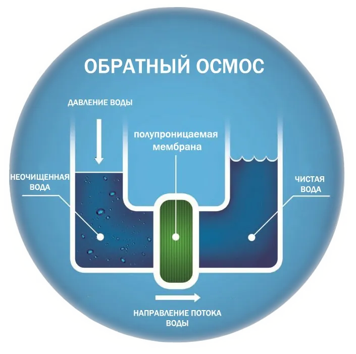
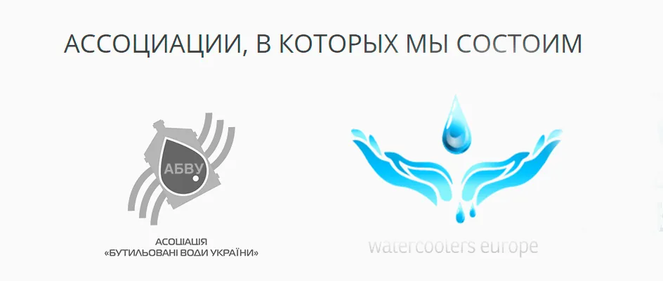

Методи очищення води
Передовий спосіб очищення води, що дає змогу отримати продукт, очищений на молекулярному рівні — система оберненого осмосу та озонова стерилізація. Це найбезпечніші та найякісніші методи очищення води.
Ключовим етапом у процесі очищення питної води є проходження води крізь напівпроникну мембрану, яка пропускає лише молекулу води H₂O розміром 0,2 нм і затримує хімічні сполуки, бактерії, віруси розміром від 8 до 500 нм.
Таким чином, з одного боку опиняється очищена питна вода (структурована вода H₂O), а з іншого — концентрат забруднень: розчинені солі, органічні та неорганічні речовини, мікроорганізми, важкі метали, добрива, колоїди й інші.
Ми використовуємо такі методи очищення води
Перш ніж відбувається розлив і подальша доставка води додому чи в офіс, наша очищена вода проходить вісім етапів обробки різними методами очищення:
- Очищення води механізованими фільтрами — використовується для відокремлення від води домішок піску, глини тощо.
- Стерилізація води (знезаражування) — необхідний етап, що дає змогу отримати очищену воду без вірусів, бактерій і спор, сірководню.
- Мультимедійне очищення води — етап проходження води крізь різноманітні фільтри, заповнені різними шарами фільтрувального матеріалу.
- Пом'якшення води — процес відбувається за рахунок іонного обміну. Це забезпечує нашій воді відсутність накипу й осаду.
- Фільтрація води активованим вугіллям — дає змогу сорбентам ефективно й без залишку сорбувати хлор і розчинені органічні сполуки.
- Ультрафіолет — дезінфікує воду. Очищена вода при цьому не змінює фізико-хімічного складу.
- Система оберненого осмосу — процес проходження води крізь напівпроникну мембрану під високим тиском 23 атм. Розмір отворів мембрани дорівнює діаметру молекули води H₂O — 0,0002 мкм. У результаті вода очищена на молекулярному рівні.
- Озонова стерилізація — чиста вода збагачується озоном. Озон створюється електричними розрядами та є нестійкою формою кисню, що перетворюється на кисень за 30 хв. Мета використання — остаточна стерилізація та знезаражування під час розливу й герметизації води в бутелях.

Наші методи очищення води гарантують, що вода "Кришталево-чиста питна вода" є:
- Структурованою, чистою питною водою високої якості (за всіма своїми властивостями схожою на талу воду).
- Очищеною та екологічно чистою водою — фільтрація проводиться без використання хімічних речовин, лише за допомогою природних механізмів очищення.
- Рекомендованою для вживання дітьми з народження.
- Такою, що сприяє швидкому надходженню в організм людини поживних речовин.
- Вода, очищена через фільтр оберненого осмосу, має оздоровчі властивості. Сприяє виведенню з організму накопичених шлаків, токсинів та інших шкідливих мікроорганізмів.

Замовте воду прямо зараз!
Оцініть справжній смак чистої води. Щоб ви могли бути впевнені — отримайте 1 бутель води на пробу БЕЗКОШТОВНО!
Чому обирають Crystal Water
- 8 ступенів очищенняОбернений осмос і озонна стерилізація.
- Стабільний pH 7,5Однаковий смак і склад від бутля до бутля.
- Доставка ввечеріПривозимо в Броварах і Києві, зокрема після 20:00.
- Безкоштовний експрес-аналізПеревіримо TDS і жорсткість ваших зразків води.
Часті запитання про очищення води
Що таке обернений осмос?
Це проходження води під високим тиском (близько 23 атм) через напівпроникну мембрану. Отвори мембрани співмірні з розміром молекули води, тому затримуються солі, бактерії та інші домішки. Очищення сягає 99,8%.
Навіщо потрібна озонна стерилізація?
Озон — нестійка форма кисню: він знезаражує воду й приблизно за 30 хвилин перетворюється назад на кисень. Це фінальний етап стерилізації перед розливом.
Скільки етапів очищення проходить вода?
Вісім: від механічної фільтрації та пом’якшення до оберненого осмосу, озонування та встановлення рівня pH.
Чому в води pH 7,5?
Після осмосу воду доводять до стабільного рівня pH 7,5, щоб смак і склад не відрізнялися від партії до партії.
Як самому перевірити воду?
Принесіть зразок — ми безкоштовно виміряємо TDS і жорсткість. Чим нижча солоність, тим нижча провідність води.
📦 Замовити воду
Залиште коротку заявку — ми швидко зв'яжемося.